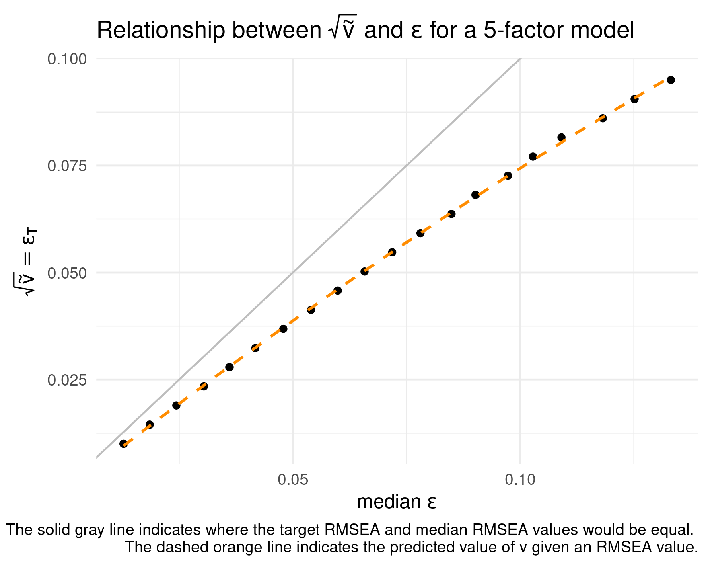
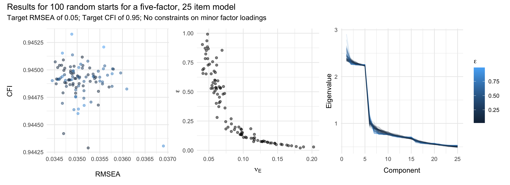

Make Some Noise: Generating Data From Imperfect Models
Justin Kracht
University of Minnesota
September 2022
Presentation Overview
\[ \DeclareMathOperator{\diag}{diag} \DeclareMathOperator{\tr}{tr} \DeclareMathOperator{\dg}{\textrm{dg}} \DeclareMathOperator{\vech}{vec} \DeclareMathOperator{\RMSEA}{\textrm{RMSEA}} \DeclareMathOperator{\CFI}{\textrm{CFI}} \newcommand{\TKLrmseacfi}{\textrm{TKL}_{\textrm{RMSEA} / \textrm{CFI}}} \newcommand{\TKLrmsea}{\textrm{TKL}_{\textrm{RMSEA}}} \newcommand{\TKLcfi}{\textrm{TKL}_{\textrm{CFI}}} \newcommand{\rmseaOmega}{\textrm{RMSEA}_{\boldsymbol{\Omega}}} \newcommand{\cfiOmega}{\textrm{CFI}_{\boldsymbol{\Omega}}} \newcommand{\tliOmega}{\textrm{TLI}_{\boldsymbol{\Omega}}} \newcommand{\crmrOmega}{\textrm{CRMR}_{\boldsymbol{\Omega}}} \newcommand{\rmseaOmegaHat}{\textrm{RMSEA}_{\hat{\boldsymbol{\Omega}}}} \newcommand{\cfiOmegaHat}{\textrm{CFI}_{\hat{\boldsymbol{\Omega}}}} \newcommand{\tliOmegaHat}{\textrm{TLI}_{\hat{\boldsymbol{\Omega}}}} \newcommand{\crmrOmegaHat}{\textrm{CRMR}_{\hat{\boldsymbol{\Omega}}}} \newcommand{\bgamma}{\boldsymbol{\gamma}} \newcommand{\bSigma}{\boldsymbol{\Sigma}} \newcommand{\bOmega}{\boldsymbol{\Omega}} \newcommand{\bOmegaHat}{\hat{\boldsymbol{\Omega}}} \newcommand{\rmseaDelta}{\textrm{RMSEA}_{\Delta}} \newcommand{\cfiDelta}{\textrm{CFI}_{\Delta}} \]
- Background
- Methods for Simulating Model Error
- Quantifying Model Error
- Study Aims
- Methods
- Results & Discussion
Background
Model Error and Covariance Structure Models
Covariance structure models allow a structured covariance matrix to be represented as a function of a vector of parameters,
\[ \boldsymbol{\Omega} = \boldsymbol{\Omega}(\boldsymbol{\gamma}), \qquad(1)\]
where \(\boldsymbol{\Omega}\) is a \(p \times p\) model-implied covariance matrix and \(\gamma\) is a vector of free parameters.
“All models are wrong, but some are useful”
— Box (1987, p. 424)
What is Model Error?
Psychological phenomena are complex; no population covariance matrix will be perfectly represented by \(\boldsymbol{\Omega}(\boldsymbol{\gamma})\) in practice.
Model error can be grouped into two basic categories (Meehl, 1990):
Incompleteness
Falsity
Representing Model Error
An population covariance matrix with model error can be represented by
\[ \boldsymbol{\Sigma} = \boldsymbol{\Omega} + \mathbf{E}, \qquad(2)\]
where \(\mathbf{E}\) is a symmetric error matrix representing the effects of model error.
Why Should We Care About Model Error?
Monte Carlo simulation studies that sample from \(\boldsymbol{\Omega}\) (rather than \(\boldsymbol{\Sigma}\)) are likely to produce overly-optimistic results.
Simulation work has shown that model error can affect:
EFA parameter estimates (Briggs, 2003)
Dimensionality estimates (Kracht and Waller, 2020)
…And other statistical procedures (Pek, 2012; Beauducel, 2016; de Winter, 2016, Gnambs, 2016; Hsu, 2015; Trichtinger, 2020).
Problem: How can we simulate \(\boldsymbol{\Sigma}\) with “realistic” model error?
Simulating Model Error
Existing Model Error Methods
Three of existing model-error methods are:
- Tucker, Koopman, and Linn (TKL; 1969)
- Cudeck and Browne (CB; 1992)
- Wu and Browne (WB; 2015)
The Tucker, Koopman, and Linn Method
The TKL method is based on the common factor analysis model for \(k\) common factors:
\[ \boldsymbol{\Omega} = \boldsymbol{\Lambda} \boldsymbol{\Phi} \boldsymbol{\Lambda}^\prime + \boldsymbol{\Psi}, \qquad(3)\]
where
- \(\boldsymbol{\Omega}_{p \times p}\): model-implied covariance matrix.
- \(\boldsymbol{\Lambda}_{p \times k}\): factor-pattern matrix.
- \(\boldsymbol{\Phi}_{k \times k}\): common factor covariance matrix.
- \(\boldsymbol{\Psi}_{p \times p}\): diagonal matrix containing the unique variances.
The Tucker, Koopman, and Linn Method
Model error is represented as the effect of numerous minor common factors such that \(\mathbf{W}_{p \times q}\) is the matrix of minor factor loadings for the \(q \succeq k\) minor common factors,
\[ \boldsymbol{\Sigma} = \boldsymbol{\Lambda} \boldsymbol{\Phi} \boldsymbol{\Lambda}^\prime + \boldsymbol{\Psi} + \mathbf{WW}^\prime \qquad(4)\]
Minor common factors are “…far too many and far too minor to be retained in a factor analysis of empirical data” (MacCallum, 2003, p. 135).
Tucker, Koopman, and Linn Method Parameters
Two user-specified parameters affect the characteristics of \(\mathbf{W}\):
\(\nu_{\textrm{e}} \in [0, 1]\): The proportion of unique variance allocated to the minor common factors.
\(\epsilon \in [0, 1]\): Controls how variance is distributed among the minor common factors.
The Cudeck and Browne Method
Cudeck and Browne developed a model error method for any covariance structure model, \(\boldsymbol{\Omega} = \boldsymbol{\Omega}(\boldsymbol{\gamma})\).
For a particular vector of model parameters \(\boldsymbol{\gamma}_0\), let \(\boldsymbol{\Sigma}_0 = \boldsymbol{\Omega}(\boldsymbol{\gamma}_0) + \mathbf{E}\).
The CB method seeks to find an \(\mathbf{E}\) matrix such that:
- \(F(\boldsymbol{\Sigma}_0, \boldsymbol{\Omega}(\boldsymbol{\gamma}))\) is minimized when \(\boldsymbol{\gamma} = \boldsymbol{\gamma}_0\).
- \(F(\boldsymbol{\Sigma}_0, \boldsymbol{\Omega}(\boldsymbol{\gamma})) = \delta\) when \(\boldsymbol{\gamma} = \boldsymbol{\gamma}_0\) for some user-specified \(\delta\).
Here, \(F(\boldsymbol{\Sigma}_0, \boldsymbol{\Omega}(\boldsymbol{\gamma}))\) represents a discrepancy function (ML or OLS).
The Wu and Browne Method
Model error is considered to be a random effect due to differences between the operational population and some ideal population.
\(\boldsymbol{\Sigma}\) is considered to be a random sample from an inverse-Wishart distribution such that
\[ (\boldsymbol{\Sigma} | \boldsymbol{\Omega}) \sim W^{-1}_p(m \boldsymbol{\Omega}, m), \qquad(5)\]
where \(m = 1/v\) is a continuous precision parameter such that \(m > p - 1\).
“[The ideal] population need not have an explicit empirical description. In this sense, the general population is defined by the model rather than by its empirical nature.”
— MacCallum and O’Hagan (2015, p. 605)
Evaluating Model Error
Model fit indices are often used to indicate the level of misfit between \(\boldsymbol{\Sigma}\) and \(\boldsymbol{\Omega}\) or between \(\boldsymbol{\Sigma}\) and \(\hat{\boldsymbol{\Omega}}\).
Absolute Fit Indices
- Root Mean Square Error of Approximation (RMSEA; Steiger, 1990)
- Correlation Root Mean Square Residual (CRMR; Bollen, 1989; Ogasawara, 2001)
Incremental Fit Indices
- Comparative Fit Index (CFI; Bentler, 1990)
- Tucker-Lewis Index (TLI; Tucker & Lewis, 1973)
Disagreement Among Fit Indices
Different model fit indices can lead to different qualitative interpretations of model fit when cut-off values are used to categorize model fit.
Example:
\(\rmseaOmega = 0.04\)
\(\cfiOmega = 0.78\)
“[T]here is no such thing as a magical, single-number summary that says everything worth knowing about model fit.”
—Kline (2011, p. 193)
Controlling the Amount of Model Error
Given that fit indices can lead to different qualitative interpretations of model fit, researchers should use and report multiple model fit indices in Monte Carlo simulation studies.
Problem: Current model-error methods take only target \(\rmseaOmega\) values (CB, WB) or no explicit target fit index (TKL).
Solution: Create an optimization procedure based on the TKL method to find values of \(\nu_{\textrm{e}}\) and \(\epsilon\) that give RMSEA and/or CFI values that are as close as possible to target values.
The Multiple-Objective TKL Method
Use the L-BFGS-B (Zhu et al., 1997) algorithm to minimize the function:
\[ G(\nu_\textrm{e}, \epsilon) = b_1 \frac{\left( \rmseaOmega - \textrm{RMSEA}_{\textrm{T}} \right)^2}{\textrm{RMSEA}_{\textrm{T}}^2} + b_2 \frac{\left( \cfiOmega - \textrm{CFI}_{\textrm{T}} \right)^2}{\left( 1 - \textrm{CFI}_{\textrm{T}} \right)^2} + 1_{\mathbf{W}} \lambda, \qquad(6)\]
- \(b_1\) and \(b_2\): User-specified weights that sum to one.
- \(\RMSEA_\textrm{T}\): User-specified target RMSEA value.
- \(\CFI_\textrm{T}\): User-specified target CFI value.
- \(1_{\mathbf{W}}\): Indicator function that equals one if any minor factor has more than two factor loadings \(\geq .3\) in absolute value.
- \(\lambda\): User-specified penalty.
Aims of the Simulation Study
I wanted to answer the following questions:
How do the model-error methods compare in terms of the fit indices they produce?
Does the proposed multiple-objective TKL method produce \(\bSigma\) matrices with RMSEA and/or CFI values that are close to the target values?
Method
Design Variables: Population Models
- Population models with 1, 3, 5 or 10 major common factors.
- Data sets with either 5 or 15 items per factor (\(p \in [5, 15, 25, 45, 50, 75, 150]\)).
- Common factor correlations either 0.0 (orthogonal), 0.3, or 0.6.
- Three factor loading structure types (simple structure): “Strong”, “Moderate”, and “Weak”, corresponding to factor loadings of 0.8, 0.6, and 0.4 (Hair et al., 2018).
Design Variables: Model Error
- Model error methods
- TKL (using target RMSEA, target CFI, and target RMSEA/CFI values).
- CB.
- WB.
- Model fit targets
- \(\RMSEA_\textrm{T} \in [0.025, 0.065, 0.090]\).
- \(\CFI_\textrm{T} \in [0.99, 0.95, 0.90]\).1
- \(\RMSEA_\textrm{T}\) and \(\textrm{CFI}_{\textrm{T}}\) pairs correspond to very good, fair, and poor model fit (MacCallum et al., 2001; Myers et al., 2015).
Design Variables: Summary
| Variable | Levels |
|---|---|
| Factors | 1, 3, 5, 10 |
| Items/Factor | 5, 15 |
| Factor Correlation (\(\phi\)) | 0.0, 0.3, 0.6 |
| Loadings | 0.4, 0.6, 0.8 |
| Target Model Fit | Very Good (\(\RMSEA_\textrm{T} = 0.025\), \(\textrm{CFI}_{\textrm{T}} = 0.99\)), |
| Fair (\(\RMSEA_\textrm{T} = 0.065\), \(\textrm{CFI}_{\textrm{T}} = 0.95\)), | |
| Poor (\(\RMSEA_\textrm{T} = 0.090\), \(\textrm{CFI}_{\textrm{T}} = 0.90\)) | |
| Error Method | TKL (three variants), CB, WB |
Study Design Variables: Summary
- 60 (error-free) population models.
- 873 crossed conditions.
- 500 reps for all model-error methods.
- \(500 \times 873 = 436,500\) simulated \(\boldsymbol{\Sigma}\) matrices.
Study Design: Data Generation
- For each (error-free) population model, generate the model-implied correlation matrix (\(\boldsymbol{\Omega}\)).
- For each model-implied correlation matrix:
- Generate 500 error-perturbed covariance matrices (\(\bSigma\)) for each of the TKL, CB, and WB model-error methods at each \(\RMSEA _\textrm{T}\) and \(\textrm{CFI}_{\textrm{T}}\) value pair.
Study Design: Evaluation
For each error-perturbed correlation (\(\bSigma\)) matrix:
- Compute RMSEA, CFI, TLI, and CRMR for \(\boldsymbol{\Sigma}\) and \(\boldsymbol{\Omega}\) (and for \(\boldsymbol{\Sigma}\) and \(\hat{\boldsymbol{\Omega}}\)).
- Compute:
\[ D = |\textrm{RMSEA}_{\textrm{obs}} - \textrm{RMSEA}_{\textrm{T}}| + |\textrm{CFI}_{\textrm{obs}} - \textrm{CFI}_{\textrm{T}}| \qquad(7)\]
Results
Distributions of \(\rmseaOmega\) Values
The \(\TKLrmsea\) and CB methods often led to \(\rmseaOmega\) values closer to the target values compared to the other methods.

Distributionsof \(\cfiOmega\) Values
The \(\TKLcfi\) and \(\TKLrmseacfi\) methods often led to \(\cfiOmega\) values that were closer to the target values compared to the other methods.

Distributions of \(D\) Values
The \(\TKLcfi\) and \(\TKLrmseacfi\) methods often led to the smallest \(D\) values, particularly in conditions with many factors, weak factor loadings, and Poor model fit.

Trade-Offs Between RMSEA and CFI
CFI values varied substantially over the range of acceptable RMSEA values, whereas RMSEA values tended not to vary much over the range of acceptable CFI values.
Thus, CFI values tended to be more influential in the \(\TKLrmseacfi\) method, even when weighted equally.

\(\mathbf{W}\) Constraint Violations
Despite the large penalty value (\(\lambda = 1,000,000\)), the \(\TKLrmsea\) method often led to solutions with violated \(\mathbf{W}\) constraints.
- Changing the value of \(\lambda\) did not significantly reduce the frequency of violations.
- The \(\TKLrmseacfi\) and \(\TKLcfi\) methods seldom produced solutions with violated constraints.

TKL Fit Index Recovery
When RMSEA and CFI targets were known to be possible, the \(\TKLrmseacfi\) method was able to generate solutions with very close \(\rmseaOmega\) and \(\cfiOmega\) values.
These results provide evidence that some RMSEA and CFI combinations are extremely difficult (if not impossible) to obtain for input matrices.

Conclusions
Recommendations
- I recommend the \(\TKLcfi\) or \(\TKLrmseacfi\) methods for use in simulation studies
- Fast.
- Reliable.
- Produce RMSEA and CFI combinations that are more likely to indicate similar levels of model fit compared to alternative methods.
- Avoids issues with large (major) minor factors.
- However: limited to factor analysis models.
- TKL, CB, and WB model-error methods are all available in the noisemaker package.
Directions for Future Work
Do the \(\bSigma\) matrices from different model-error methods (with similar model fit index values) lead to different factor loading estimates?
Adapt the multiple-objective TKL method to restrict the range of possible \(\nu_{\textrm{e}}\) and \(\epsilon\) values.
Backup Slides
Population Model Fit Indices
\[ \textrm{RMSEA} = \varepsilon = \sqrt{\frac{F_h}{df_h}}, \qquad(8)\]
\[ \textrm{CFI} = 1 - \frac{F_h}{F_b}, \qquad(9)\]
\[ \textrm{TLI} = 1 - \frac{F_h / df_h}{F_b / df_b} \qquad(10)\]
- \(F_h\) and \(df_h\) denote the discrepancy function value and degrees of freedom for the full model.
- \(F_b\) and \(df_b\) denote the discrepancy function value and degrees of freedom for the baseline (independence) model.
CB: Specifying the Amount of Model Error (RMSEA)
The CB method allows a user to generate an error-perturbed covariance matrix with a specified RMSEA value.
\[ \delta = \varepsilon_\textrm{T} df, \qquad(11)\] where \(df\) denotes the model degrees of freedom.
- \(\boldsymbol{\Sigma}\) can be indefinite if \(\delta\) is too large.
- If \(\delta\) is large, \(\theta_0\) might correspond to a saddle point.
WB: Specifying the Amount of Model Error (RMSEA)
The error-perturbed covariance matrix \(\boldsymbol{\Sigma}\) is sampled from:
\[ (\boldsymbol{\Sigma} | \boldsymbol{\Omega}) \sim W^{-1}_p(m \boldsymbol{\Omega}, m), \qquad(12)\]
The precision parameter, \(m = 1/v\), is related to RMSEA such that \(v \approx \varepsilon^2\).
The approximation gets worse as \(\varepsilon^2\) increases; simply using \(m = 1 / \tilde{v}\) is unlikely to lead to RMSEA values close to \(\varepsilon_\textrm{T}\) when \(\varepsilon_\textrm{T}\) is not very small.
WB: Fit a Regression Model for \(v\)
Find an appropriate value of \(v\) such that RMSEA(\(\boldsymbol{\Sigma}, \boldsymbol{\Omega}\)) \(\approx \varepsilon_\textrm{T}\):
- Create a vector of \(\tilde{v}\) values for \(\varepsilon_\textrm{T}\) values in a reasonable range (e.g., 20 values between 0.01 and 0.095).
- For each value of \(\tilde{v}\):
- Sample a number of covariance matrices (e.g., 50) from the corresponding inverse-Wishart distribution.
- Calculate the median RMSEA value for the sampled covariance matrices.
- Sample a number of covariance matrices (e.g., 50) from the corresponding inverse-Wishart distribution.
- Regress \(\tilde{v}\) on the median RMSEA and squared median RMSE values.
- Use the fitted model from Step 3 to find a value of \(v\) that is likely to lead to error-perturbed covariance matrices with RMSEA values close to \(\varepsilon_\textrm{T}\).
WB: Example
Population Model Fit Indices
\[ \textrm{SRMR} = \sqrt{ \frac{1}{p (p + 1) / 2} \sum_{i \leq j} \left( \frac{\sigma_{ij} - \omega_{ij}}{\sqrt{\sigma_{ii} \sigma_{jj}}} \ \right) ^2 } \qquad(13)\]
\[ \textrm{CRMR} = \sqrt{ \frac{1}{p (p - 1) / 2} \sum_{i < j} \left( \sigma_{ij} - \omega_{ij} \ \right) ^2 } \qquad(14)\]
- \(p\) is the number of observed variables.
- \(\sigma_{ij}\) and \(\omega_{ij}\) are the \(i,j\)th elements of \(\boldsymbol{\Sigma}\) and \(\boldsymbol{\Omega}\), respectively.
Qualitative Fit Index Agreement

RMSEA and CFI Distributions

Local Optima
CB Completion Time

Indefinite Matrices

L-BFGS-B Non-convergence
- Non-convergence only occurred when the \(\TKLrmseacfi\) method was used.
- Only 14 of 90,000 (<1%) of \(\TKLrmseacfi\) cases failed to converge using L-BFGS-B.

\(\mathbf{W}\) Constraint Violations
- Despite a large penalty (\(\lambda = 1,000,000\)), violations of the \(\mathbf{W}\) constraints were sometimes violated.
- Adjusting the value of \(\lambda\) was not helpful, but including a CFI target value helped considerably.
\(\mathbf{W}\) Constraint Violations